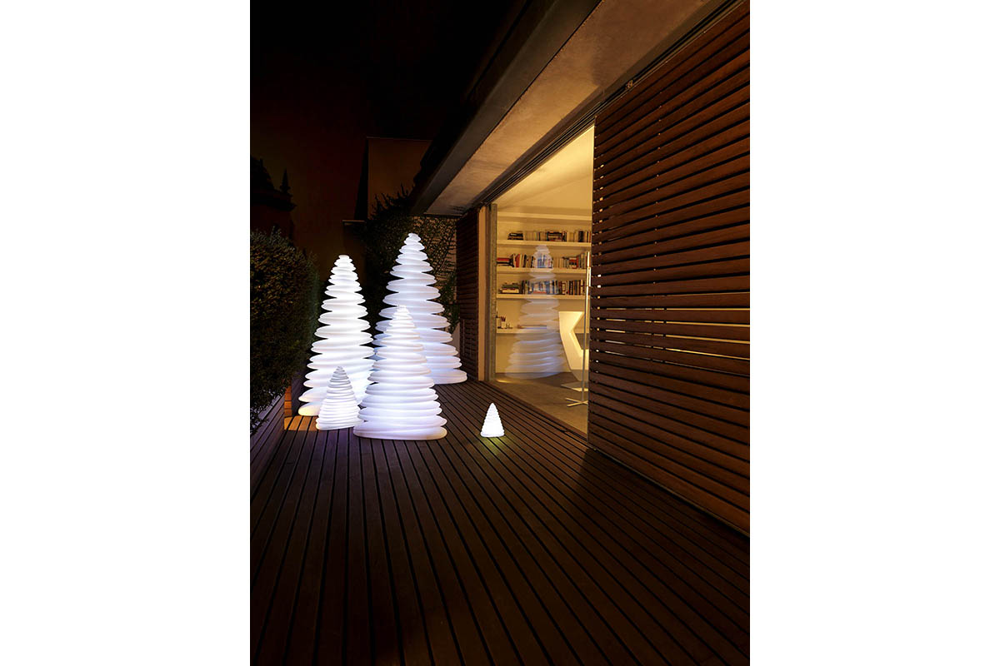
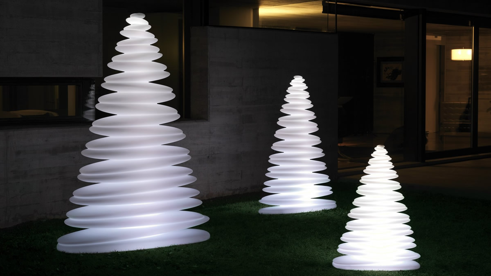

|
2012 |
ChrismyEl Chrismy nace gracias a la relación que desde años une a Teresa Sapey con VONDOM, empresa española dedicada a la producción de muebles de diseño y basada en la cultura de diseño como clave del éxito. Su asociación con artistas, arquitectos y diseñadores como Ramón Esteve, Karim Rashid, Javier Mariscal o Agatha Ruiz de la Prada hace que su reconocimiento sea internacional. En este caso, nuestra esta última colaboración se transformó en un homenaje al tradicional árbol de navidad. Un tema que sin duda es uno de los favoritos de Teresa, ya que le trae recuerdos de su Turín natal, donde cada año diseñaba una decoración distinta para la casa de sus padres. Este clásico renovado, bautizado como Chrismy, es un árbol refinado en su modernidad atemporal y fácilmente adaptable. La idea parte de crear un árbol inspirado en las formas naturales, orgánicas y elegantes de los tradicionales árboles de navidad. En este caso, y al tratarse de un árbol perenne, su diseño debía ante todo cumplir con las reglas del diseño contemporáneo característico de VONDOM. Sus formas redondeadas se elevan hacia la cúspide en cada uno de los vaivenes de su silueta. Pura magia visual conseguida a través de su lógica continuidad. Resultaba fundamental que el árbol tuviera su propia iluminación sin falta de recurrir a elementos externos que pudieran afear el diseño. Para ello se pensó con iluminación interior en distintos colores que se van alternando. Como resultado, una solemne y sinuosa figura que hace de este árbol la mejor opción para crear atmósferas envolventes y ser disfrutado en múltiples espacios. Pagina oficial de Vodom |

 |